Describing rates of change is common in environmental science (rate of pollutant concentration change, rate of population growth, rate of energy consumption)
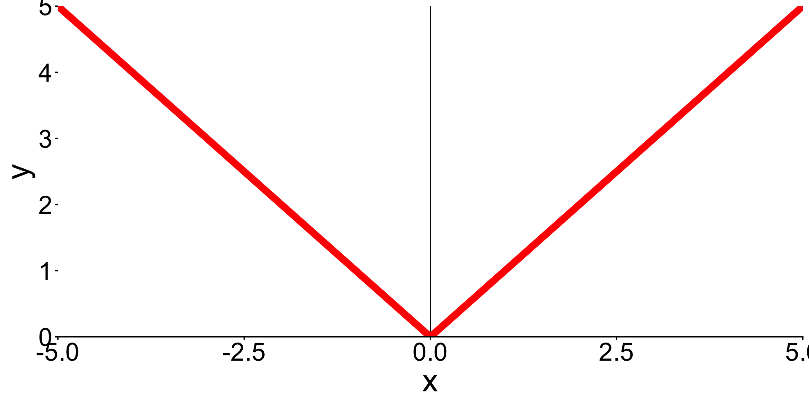
EDS 212: Day 2, Lecture 2
Derivatives
August 4th, 2025
Recall average and instantaneous rate of change
Big idea: Taking the average rate of change to a set limit will eventually converge to the instantaneous.
Average slope
✏️
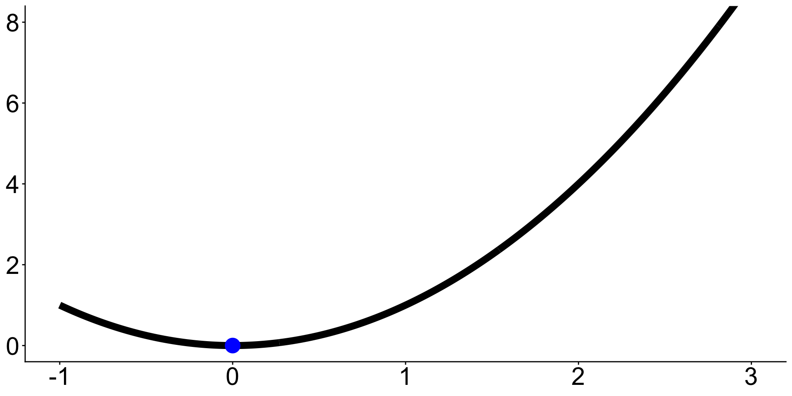
Start with:
Nearby point:
Average slope:
Average slope
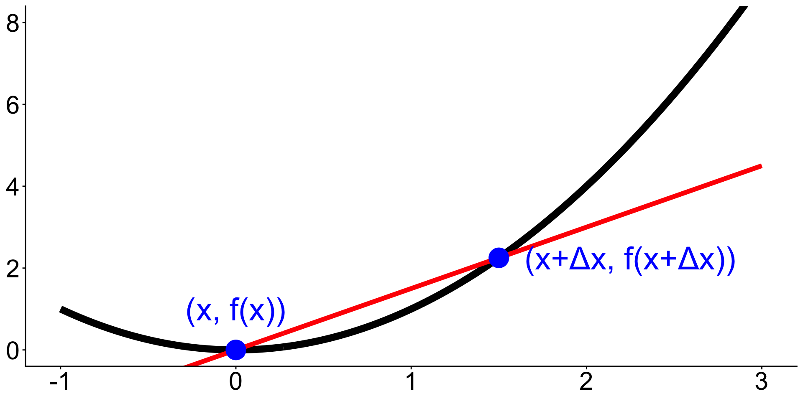
Start with a point \((x,f(x))\) on the graph.
A nearby point can be \((x+\Delta x, f(x+\Delta x))\), where \(\Delta x\) is a short distance from \(x\).
The average slope between \((x,f(x))\) and \((x+\Delta x, f(x+\Delta x))\) is given by
\[\text{average slope} = \frac{f(x+\Delta x) - f(x)}{(x+\Delta x)-x} = \frac{f(x+\Delta x) - f(x)}{\Delta x}.\]
What happens when \(\Delta x\) becomes smaller and smaller?
What happens when \(\Delta x \to 0\)?
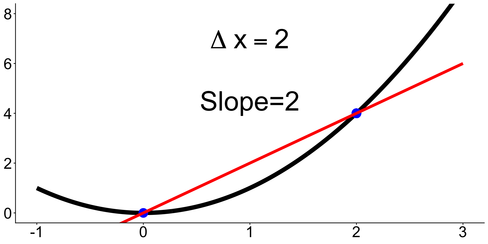
What happens when \(\Delta x \to 0\)?
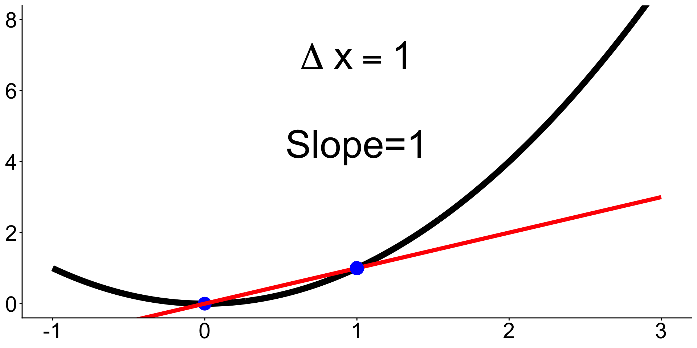
What happens when \(\Delta x \to 0\)?
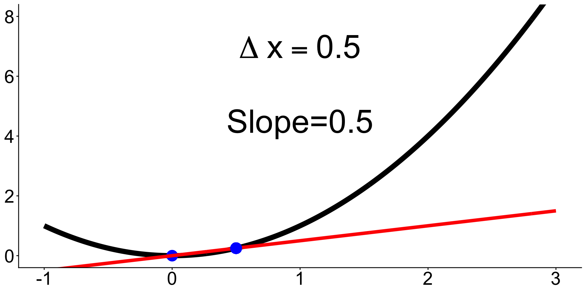
What happens when \(\Delta x \to 0\)?
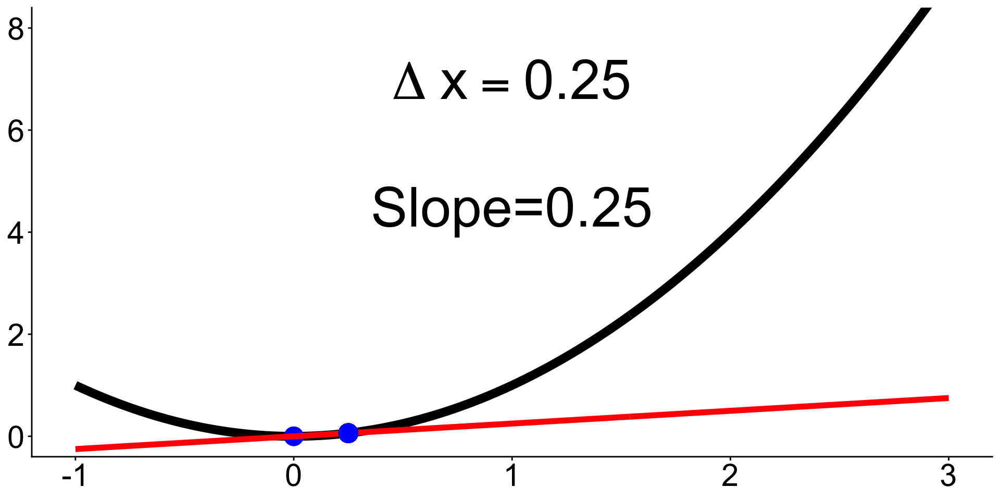
Tangent lines
What if we let \(\Delta x=0\)?
Then we would have a slope line that only touches the graph at exactly \(x\).
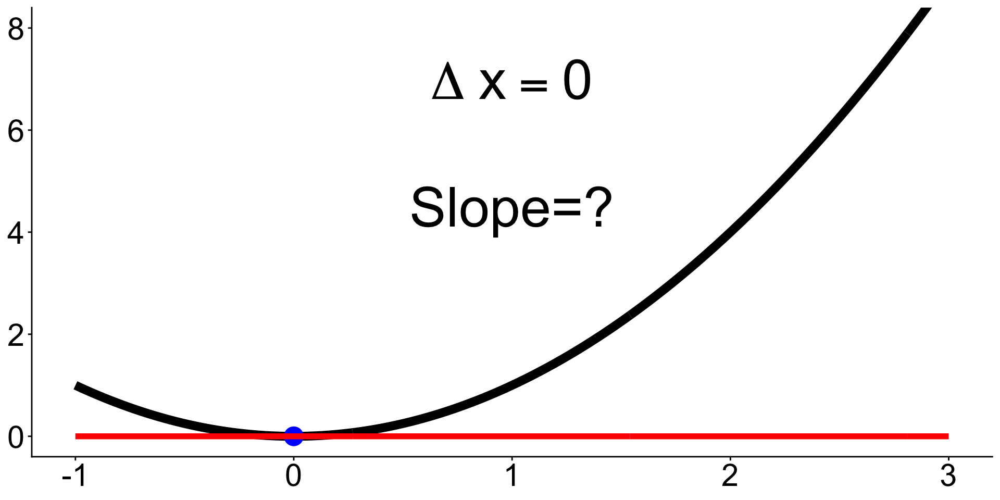
These very special types of lines are called tangent lines.
Derivative definition
Remember the slope of the line that passes between two points \((x_1, y_1)\) and \((x_2, y_2)\) is:
\[\text{slope}=\frac{y_2-y_1}{x_2-x_1}.\]
If we have a function \(f(x)\), then \((x,f(x))\) represents a point on its graph.
Choose a different point on the graph that is \(\Delta x\) away: \((x+\Delta x,f(x+\Delta x))\).
Plug these pointson the graph of \(f(x)\) into the slope equation:
\[ \text{slope}=\frac{f(x+\Delta x)-f(x)}{\Delta x}. \]
When we let \(\Delta x \to 0\) we get the slope of the tangent line at \(x\)
\[ \large f'(x)=\lim_{\Delta x \to 0} \frac{f(x+\Delta x)-f(x)}{\Delta x} \]
This is the derivative of \(f\) at \(x\). Also denoted \(\frac{df}{dx}\).
Artwork by Allison Horst
Not all functions are differentiable
It’s graph is:

Let’s take a 5 minute break
image: Flaticon.com
Why derivatives in an EDS program?
Describing rates of change is common in environmental science (rate of pollutant concentration change, rate of population growth, rate of energy consumption)
Calculus and derivatives are used to study change
Environmental Science studies change
Environmental Science studies change
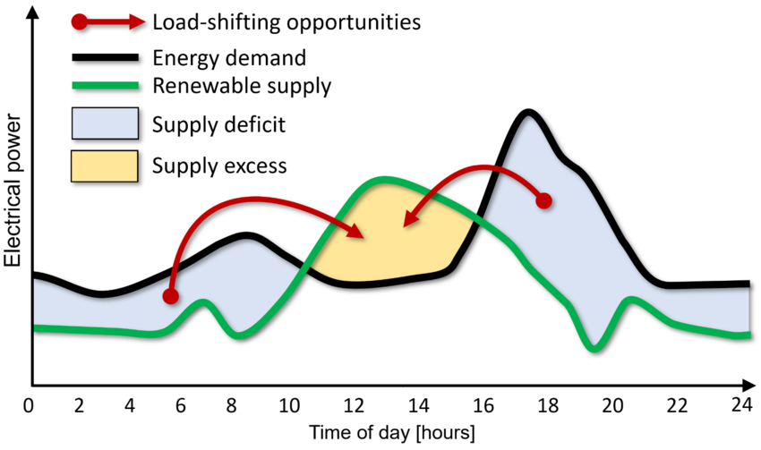
Environmental Science studies change
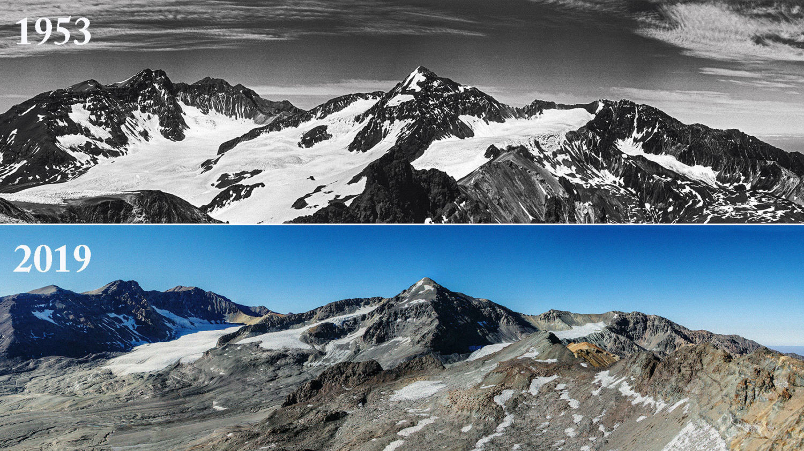
🤔 Talk with a partner, what are 2 fields of environmental science where studying the rate of change and derivatives would be important?
Rules for differentiation (1)
Constant Rule ✏️
Power Rule ✏️
Rules for differentiation (1)
Constant Rule
Let \(c\) be a constant (so, a number). If \(f(x) = c\), then \(f'(x)=0\). Equivalently
\[\frac{d}{dx}c = 0\]
Power Rule
Let \(n\) be a (real) number, if \(f(x)= x^n\), then \(f'(x) = nx^{n-1}\). Equivalently \[ \frac{d}{dx}[x^n] =nx^{n-1}. \]
Examples ✏️
\[ \begin{align} &y=100 & &f(x)=x^5 & &f(x)=\frac{1}{x^2} \end{align} \]
Rules for differentiation (2)
Sum and Difference Rules
✏️
Rules for differentiation (2)
Sum and Difference Rules
Let \(f(x)\) and \(g(x)\) be differentiable functions. Then \[ \begin{align} \frac{d}{dx}[f(x)+g(x)]=\frac{d}{dx}f(x)+\frac{d}{dx}g(x) \\ \frac{d}{dx}[f(x)-g(x)]=\frac{d}{dx}f(x)-\frac{d}{dx}g(x) \end{align} \]
😵All this says is: if the function has pieces that are added or subtracted you can take the derivative of each individual piece and add those derivatives.
Example ✏️
\[ f(x)=x^3-x^2-15 \]
Rules for differentiation (3)
Constant Multiplier Rule
✏️
Rules for differentiation (3)
Constant Multiplier Rule
The derivative of a constant \(c\) multiplied by a function \(f(x)\) is the same as the constant multiplied by the derivative:
\[\frac{d}{dx}[kf(x)] = k\frac{d}{dx}f(x)\]
Example ✏️
\[ y=x^2+\sqrt{2}x-\frac{8}{x}+4 \]
Derivative of logs & exponents
Two special derivatives:
Summary of differentiation rules
| Differentiation Rule | \(f'(x)\) notation | \(\frac{d}{dx}\) notation |
|---|---|---|
| Constant Rule | \(f(x)=c \Rightarrow f'(x)=0\) | \(\frac{d}{dx}[c]=0\) |
| Power Rule | \(f(x)=x^n \Rightarrow f'(x)=n x^{n-1}\) | \(\frac{d}{dx}[x^n]=n x^{n-1}\) |
| Sum Rule | \((g(x)+h(x))'=g'(x)+h'(x)\) | \(\frac{d}{dx}[g(x)+h(x)]=\frac{d}{dx}g(x)+\frac{d}{dx}h(x)\) |
| Difference Rule | \((g(x)-h(x))' = g'(x)-h'(x)\) | \(\frac{d}{dx}[g(x)-h(x)]=\frac{d}{dx}g(x)-\frac{d}{dx}h(x)\) |
| Constant Multiplier Rule | \((c\cdot g(x))'=c\,g'(x)\) | \(\frac{d}{dx}[c\,g(x)]=c\,\frac{d}{dx}g(x)\) |
And two special derivatives: \(\frac{d}{dx}(e^x) = e^x\) and \(\frac{d}{dx}ln(x)=\frac{1}{x}\).
There’s more differentiation rules (product, quotient, chain rule).
They’re fun, but we won’t be reviewing them.
Higher order derivatives
We can continue to take derivatives of derivatives.
The second derivative becomes the rate of change of the rate of change.
If we interpret the first derivative as velocity, then the second derivative is acceleration.
Notation:
Derivatives practice
Solve individually and then check with a partner.
\[ \begin{align} \text{A) }& f(x)=3x^4 &\text{B) } y=4x^2+3x-16 \end{align} \]
\[ \begin{align} &\text{A) } y=3x^2 & &\text{B) }h(x)=2x(x^2 + 3x) & &\text{C) }g(y)=2\sqrt{y} - e^y + 20\ln(y) \end{align} \]
\[G(z)=3z^4-8z^3+2z-19\]
Derivatives practice
✏️ Let’s see a solution!
2.B) Find the derivative \[h(x)=2x(x^2 + 3x)\]
Derivatives practice
✏️ Let’s see a solution!
2.C) Find the derivative \[g(y)=2\sqrt{y} - e^y + 20\ln(y)\]
Derivatives practice
✏️ Let’s see a solution!
Partial derivatives
When we find a partial derivative, we find an expression for the slope with respect to one variable in a multivariate function.
Notation: the partials of \(f(x,y,z)\) are \(\frac{\partial f}{\partial x}\), \(\frac{\partial f}{\partial y}\), and \(\frac{\partial f}{\partial z}\)
We read \(\frac{\partial f}{\partial x}\) as “the partial derivative of \(f\) with respect to \(x\)”
How to take partial derivatives? Find the derivative with respect to a single variable, treating all others as constants.
Partial derivatives example
✏️ Find all partial derivatives of
\[B(x,y, z)=0.4x^3y-3.6y^2+4zx + 8\]
Partial derivatives example
Find all partial derivatives of
\[B(x,y, z)=0.4x^3y-3.6y^2+4zx + 8\] \[\frac{\partial B}{\partial x}=1.2x^2y+4z\] \[\frac{\partial B}{\partial y}=0.4x^3-7.2y\] \[\frac{\partial B}{\partial z}=4x\]
Partial derivatives example
Find all partial derivatives of
\[B(x,y, z)=0.4x^3y-3.6y^2+4zx + 8\] \[\frac{\partial B}{\partial x}=1.2x^2y+4z\] \[\frac{\partial B}{\partial y}=0.4x^3-7.2y\] \[\frac{\partial B}{\partial z}=4x\]
✏️What is the value of the partial derivative of \(B\) with respect to \(z\) at the point \((1,2,3)\)?
OK, but what do partials actually mean?
The slope with respect to one variable if other variables are held constant.
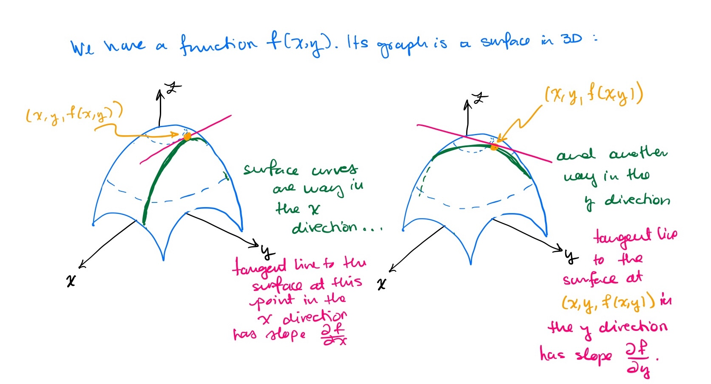
Partial derivatives practice
\[T(x,y)=x^2y-2x+y-1\]
At what “rate” is temperature changing (with respect to distance):
\[T(W,L)=0.41WL+2.6W^2\]
At what rate is breath temperature changing with respect to length for a dragon that is 4.1m long, with a wingspan of 4.5m?
At what rate is breath temperature changing with respect to wingspan, for the same dragon?
Partial derivatives practice
✏️ Let’s see a solution.
\[T(x,y)=x^2y-2x+y-1\]
At what “rate” is temperature changing (with respect to distance):
Partial derivatives practice
✏️ Let’s see a solution.
\[T(W,L)=0.41WL+2.6W^2\]
At what rate is breath temperature changing with respect to length for a dragon that is 4.1m long, with a wingspan of 4.5m?
At what rate is breath temperature changing with respect to wingspan, for the same dragon?
Example: higher order & partial derivatives in environmental data science
The Advection-Dispersion-Reaction Equation for solute transport models the change in a solute concentration \(C\) over time \(t\) and \(x,y,z\) space, where groundwater is flowing in direction \(x\):
\[\frac{\partial C}{\partial t}=D_x \frac{\partial^2C}{\partial x^2} + D_y\frac{\partial^2C}{\partial y^2}+D_z\frac{\partial^2C}{\partial z^2}-v\frac{\partial C}{\partial x}-\lambda RC\]
\(D_x, D_y, D_z\) are hydrodynamic diffusion coefficients in the \(x\), \(y\), and \(z\) direction.
Let’s break it down.
\[\frac{\partial C}{\partial t}=D_x \frac{\partial^2C}{\partial x^2} + D_y\frac{\partial^2C}{\partial y^2}+D_z\frac{\partial^2C}{\partial z^2}-v\frac{\partial C}{\partial x}-\lambda RC\]